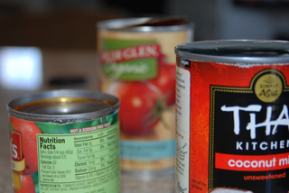

What's Cookin'?
I made an Asian dish at home and I will document the process that I used to make it and the reviews of those who had my meal here.
I made a chicken curry dish over rice and added snow peas on the side for veggies.
Curry dishes are common in India, and it is thought that the seasoning originated there.

The very first step is to get the ingredients at the grocery store.
The next thing that I did was to dice the onion and garlic to make them easier to cook with.
The chicken also needed to be cut up into bite-size pieces.
I seasoned the chicken, now cut up, with salt and pepper.
We put a dash of olive oil and the curry powder into the pan and turned up the heat.
Once the oil had heated up a bit, the diced and seasoned chicken went into the pan. As soon as the chicken hit the pan, the entire house started smelling good!
Next, the cans had to be opened up to add them to the pan later on. We had bought coconut milk, diced tomatoes, and tomato sauce.
I added the onions and garlic to the chicken with a bit more oil.
We stirred together the chicken and the onions and decreased the heat a little.
Now it was time to add the canned ingredients. I started with the coconut milk, which came out chunky and needed some good stirring. The tomato-based ingredients went in more easily.
Very soon, the ingredients had dissolved and it began looking like a soup. We had an hour to wait before the dish would be ready, and so got started on the rice.

I put the cover on the pan while it simmered.
The rice, water, and some oil went into a pot on another burner.
Quickly, the liquids had begun to evaporate in the curry.
The rice pot also got a lid while we waited for both to be ready.
By now, the chicken was almost ready. A chunk of chicken was cut in half to check its doneness.
Finally, the rice was ready! It looked fluffy and delicious.
It was time to plate the finished dish with snow peas. The liquid part of the curry soaked into the rice and made a sauce for it.
We dug in, and it was very good! You can see the dish, half-eaten, with the sauce on the rice.
I finished and took this picture to show my clean plate.
My family members who ate the dish enjoyed it very much. The curry turned out a little more spicy than my brother would have liked, but he still enjoyed the rest of the dish.
Copyright warning: Images and text on this page (c) 2017 Jack W. / jack-the-coder. All rights reserved. It is illegal to use the text or images outside of demonstration purposes in an education setting.